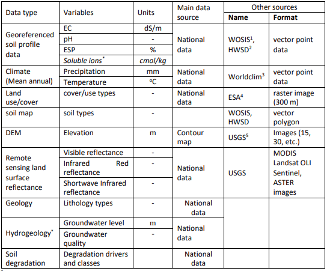
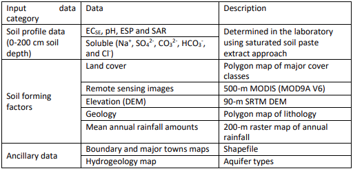
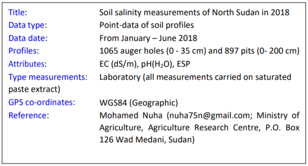

Chapter 4 Preparation for multiscale mapping of salt-affected soils
4.1 Requirements
Multiscale mapping of salt-affected soils requires adequate coordination and mobilization of input data, computer and software for implementing the mapping methods, and a harmonized approach that allows comparison of information in space and time. Input data requirements have been elaborated in Section 1, which gives the relationship between input data and characteristics of salt-affected soils. Mobilization of capital resources and coordination of activities are outlined in Section 3. The interaction between different aspects on input requirements for mapping salt-affected soils are illustrated in Figure 4.1.
Figure 4.1: Requirements for multiscale mapping of salt-affected soils
4.1.1 Input data
Input data provide evidence of occurrence of salt-affected soils. Their characteristics influence and are also influenced by the specifications of the final outputs of the mapping exercise such as suitable soil depths, spatial resolution of the final maps, incorporation of uncertainty and accuracy assessment , and classification of the intensity of salt problems in the soil. Table 4.1 is an example summary of input data requirements for national, regional and global mapping of salt-affected soils.
Table 4.1: Minimum input data requirements for large-area mapping of salt-affected soils 
1: WOSIS: https://www.isric.org/explore/wosis
2: HWSD:http://www.fao.org/soils-portal/soil-survey/soil-maps-and-databases/harmonized-world-soil-database-
v12/en/
3: WorldClim: https://www.worldclim.org/
4: ESA: https://www.esa-landcover-cci.org/
5: USGS: https://earthexplorer.usgs.gov/
4.1.2 Computer and software
Computer and software are required to process the input data, implement the assessment methods, and to store and share the final spatial information. They include processing, storage, and networking facilities for developing the spatial information of salt-affected soils. Processing facility is the core component responsible for implementing the assessment methods and consist of the computer processor and software. Consideration for specification of the processing facility is important since processing complexities tend to increase with increase in spatial extent and resolution of the final outputs. Storage of the input and processed data is handled by the computer storage (hardware) facility. Like the processing facility, the demand for storage facility also increases with increase in spatial extent of the target areas. The sizes of the input images and processed maps may increase from the national to global level assessment. All these considerations influence the minimum computer and software requirements for implementing multiscale mapping of salt-affected soils. The following computer specifications are suggested for national mapping of salt-affected soils:
- Enough processing memory (at least 8GB RAM);
- Fast processing capacity (at least Core i5 or equivalent);
- Enough storage capacity (at least 100 GB).
Internet connectivity is also an important aspect of the computer and software requirements. It enables access to online data repositories during data acquisition as well as during information sharing.
4.1.3 Example input data for demonstrating spatial mapping of salt-affected soils
The case study for demonstration indicator-based spatial mapping of salt-affected soil was obtained is northern Sudan. The area stretches from the Latitude 22\(^\circ\) 13’ 30.3" to 16\(^\circ\) 30’ 28.59" North and from the Longitude 32\(^\circ\) 41’ 3.55" to 25\(^\circ\) 0’ 0" East (Figure 4.2). Input soil data from this area consist of 379 profile locations which were surveyed in 2018 at various soil depths between 0 and 200 cm. The data includes ECSE (dS/m), pH, ESP, soluble ions (Soluble Na+, SO42-, CO32-, HCO3-, and Cl-) in cmol/kg and were determined using the saturated soil paste extract approach. This data is available at https://doi.org/10.1594/PANGAEA.920201
Location of soil profile information in Northern Sudan
Data on soil forming factors include multispectral remote images, remote sensing image of digital elevation model (DEM), and maps of land cover types, geology, and mean annual rainfall amount (Table 4.2). The input data also include shapefiles of the case-study boundary and major towns and raster map of aquifer types.
Table 4.2: Case-study input data from northern Sudan (source: Government of Sudan, http://susis.sd/)

4.2 Software requirements for multiscale mapping salt-affected soils
4.2.1 GIS application requirements
GIS applications are useful in spatial data preparation and presentation of the final products to enrich the information content. Commonly used GIS applications for data preparation are:
- Reprojection: This application is needed to align the coordinate system of GIS data into one uniform projection. Projections that give spatial dimensions in meters are preferred while WGS84 geographic (decimal degrees) projection is preferred for data sharing.
- Layer clipping: This application helps with reducing data bulk by trimming the extent within the boundary of the area of interest.
- Format conversion: This application is used to enable data exchange between different software and for data sharing. Format conversion is done to change GIS vector to raster (and vice versa) or to change between raster file types (such as from geoTiff to ASCII).
- Resampling: Resampling application is needed to harmonize resolution of input layers for spatial modelling of indicators and classified map of salt-affected soils.
- Image correction: Image correction is mainly applied to remote sensing images. There are two types of image correction: radiometric and geometric correction. Radiometric correction aims at converting image digital numbers (DN) to reflectance. The algorithms for radiometric corrections are usually given for each type of remote sensing mission. Geometric correction application reprojects the images to a preferred coordinate reference system (CRS) to the images.
- GIS database development: This facility is required to put together a harmonized complete dataset to minimize spatial modelling errors and to ensure compatible storage for future reference or applications.
- Map layout: This is the final value-addition to GIS layers to enhance communication with users of the final products of spatial information for salt-affected soils.
Most GIS software can implement the above applications. The following guidelines can be used to select a suitable GIS software to use:
- Software which accommodates a wide range of GIS file formats;
- Software with many alternatives for colour pellets and symbology for map layouts;
- Software with easily accessible layer view and graphical user interface functionalities;
- Software which is strict with on-screen overlay of truly pixel-harmonized and georeferenced layers;
- Software with versatile but easy-to-implement vector-to-raster conversion algorithms;
- Software with robust modules for remote sensing applications and direct image download;
Mapping of salt-affected soils - Technical manual
- Software with vibrant and freely accessible online support;
- Easily accessible software (preferably low cost or open source).
Some of the GIS software meeting the above criteria are QGIS (https://download.qgis.org/), ILWIS (https://52north.org/software/software-projects/ilwis/), gvSIG (http://www.gvsig.com/en), and SAGA (http://www.saga-gis.org/en/index.html). Other commercial GIS software such as ArcGIS, ERDAS, IDRISI, ENVI, etc. are also suitable alternatives.
4.2.2 Data harmonization requirements
Data for multiscale mapping of salt-affected soils may have variations and standards because of their sources and methods of data generation, spatial and temporal resolution, file format, and measurement units. Input data harmonization is necessary to produce compatible dataset to reduce errors in data handling and spatial modelling uncertainties. Data harmonization applications include:
- Standardizing measurement units;
- Converting soil property values to the equivalent of a preferred measurement method;
- Harmonizing soil property values at uniform soil depth intervals;
- Transforming statistical distribution to a preferred probability distribution function;
- Harmonizing spatial resolution, projection and extent of input GIS layers for spatial modelling.
In multiscale mapping of salt-affected soils, input data harmonization focuses on soil indicators and GIS spatial layers (Figure 4.3). Software requirement for data harmonization include requirements for implementing data conversion models, image correction and indices development, and harmonizing GIS layers. Statistical harmonization needs are implemented using statistical software while GIS harmonization needs are implemented using GIS software. A suitable software such as R and its contributed packages (R (https://cran.r-project.org/bin/windows/base/) may be suitable for combining statistical and GIS harmonization needs. R contributed packages include soilassessment (Omuto, 2020), raster (Hijmans, 2020), rgdal (Bivand et al., 2019), and GSIF (Hengl, 2019).
Figure 4.3: Input data harmonization for multiscale mapping of salt-affected soils
4.2.3 Spatial modelling requirements
Multiscale mapping of salt-affected soils requires spatial input data, which are combined through certain procedures to produce spatial information of the status of soil salt problems. Spatial modelling targets the development of spatial layers of input data (indicators) of salt problems and for developing classified map of salt-affected soils. The software requirements for spatial modelling are:
- Functionality for spatial prediction of numerical and categorical variables;
- Functionality to estimate mapping accuracy and uncertainties;
- Functionality to classify salt-affected soils.
Freely downloadable R computing software adequately meets these requirements. Some of its packages are especially useful in implementing some of the above requirements. For example, the soilassessment package has functions for classifying salt-affected soils and estimating mapping accuracy and uncertainties while the caret package has functions for spatial prediction of numerical and categorical variables (Kuhn, 2020; Omuto, 2020).
4.3 Input data preparation for mapping salt-affected soils
Input data preparation is a necessary step in mapping salt-affected soils. It involves creation of a complete and fully harmonized database of soil profile data, GIS layers, and reference documentation.
- Soil profile database is the database containing spreadsheet of georeferenced soil profile. The database contains information on soil depth and measured soil properties for each sampled depth, measurement units, methods used in measurements, reference laboratory, date of data acquisition, reference publication (if any), contact person, and summary metafile (text-file).
- GIS database is the database containing spatial GIS layers, which are layers of soil forming factors and ancillary drivers of salt problems in the soils.
- Document database is the database containing literature of existing information about salt- affected areas, problems, legislation, and previous attempts on solving the problem, etc.
It is important to consider standard GIS practices when preparing and GIS data handling. The practices include:
Rule on file path: A short pathname is preferred Pathname contains file locations separated by forward or backward slash “/”. The number of items in a pathname, which are separated by the slash “/” should be as few as possible and containing no spaces. For example, “C:/Salinity/Input” has two slash symbols implying two folders in the pathname while “C:/Salinity/Sudan/Input” has three slash symbols for three folders in the pathname. The 3-folder pathname is longer than the 2-folder pathname.
Rule on file name
DO NOT create filenames or folder-names with spaces (e.g. “salt affected.shp” is not recommended). Instead use underscore or without space (e.g. “salt_affected.shp” or “saltaffected.shp” are recommended). DO NOT start filenames with numbers, symbols, mathematical operators, full-stop and comma (e.g. “.ECtp.xls” or “+ESP.tif” or “0_30topESP.mpr” are not recommended). It is better not to use mathematical operators in filenames. DO NOT create filenames with long names (e.g. “salt_affected_soluble_ions_sodium.csv” is not recommended).Use informative naming style incorporating file type or projection for GIS layers (e.g. “soildata_dg.shp” or “ECtop0_30cm.tif” or “DEM90_UTM37N”).Rule on data archive
Separate and protect input data by placing them in input folder and write-protecting it from inadvertent overwrite. The steps shown in Figure 4.4 are useful in creating working and archiving folders and protecting archive folders. Write-protect feature for input folder may need to be remove when a new original data is to be added to the archive and the protection reinstated afterwards.
Figure 4.4: Steps for protecting folder with original data
4.3.1 Organizing spreadsheet data
A three-step approach is described for organizing and documenting spreadsheet data.
Step 1: Aligning spreadsheet dataIn this step, the spreadsheet data is orderly arranged so that the data rows represent samples and columns represent variables. The samples are distinguished by sequential serial numbers. A good practice is to use the first column as the variable indexing the serial order of the samples. The other variables in the database are consecutively aligned in the columns beginning with profile ID, location description (if any), Latitude and Longitude, and sampling depth-range (Figure 4.5). The depth-range is further split into two variables: Upper and Lower. Upper denotes the first part of the depth-range while Lower denotes the last part of the depth-range. The value for Upper in one sample should be the same as the value for Lower in the preceding sample for the same profile ID (Figure 4.5). Other variables such as Depth Code (or Horizon number), soil texture components, organic carbon, pH, EC, ESP, and additional soil properties (e.g. soluble ions, exchangeable sodium ions and CEC) are also included in that order (Figure 4.5). The Depth Code (or Horizon) should have consecutive numbers beginning with 1 for the first depth to the last sampled depth/horizon in each profile. This arrangement creates repeated numbers/codes for the profile ID and Longitude and Latitude values (Figure 4.5).
Figure 4.5: Input spreadsheet data format
It is important to ensure that:
- Upper, Lower, and Horizon for each profile ID should be increasing down the soil profile;
- Latitude, Longitude and Profile ID should remain constant for each Profile ID;
- Upper is equivalent to the first part of the Depth range and Lower is the second part of Depth.
After data organization, the spreadsheet data should be saved (preferably as comma separated values, CSV) for further alignment with other datasets (Figure 4.6).
Figure 4.6: Saving spreadsheet data in MS Excel as CSV text file
Sometimes, it may be necessary to ascertain that the computer system separator is comma or semi-colon since this will influence access to the saved CSV file. The following procedure may be useful to establish the type of system separator.
- Click on the Start menu.
- Type control panel.
- Click on Control Panel (Desktop app).
- Select Clock, Language, and Region.
- Click Region.
- Select Additional settings in the pop-up window.
- Check the separator in front of List separator.
Where necessary, change the system separator to comma (by following the above steps and changing to comma at step 7 and saving the change). If the system separator is changed after completing the steps in Figure 4.6, then the steps should be repeated.
Step 3: Documenting spreadsheet dataThis last step is concerned with documenting the data. The items to document are:
- Title (short description data type - point or spatial GIS layer);
- Data type, date of data generation, number of profiles/augers;
- Salinity/sodicity indicator;
- Type of measurement (field or laboratory) and units of measurement;
- Type of soil-water solution (soil solution extract used);
- GPS coordinate reference system (CRS);
- Reference publication/contact address.
The following is an example of a two-column textfile/notepad for the documentation. It should be saved as data metafile alongside the CSV file in Figure 4.6.

4.3.2 Organizing GIS layers
Organizing GIS layers starts from layer acquisition. Online repositories are available for free download of some GIS datasets such as remote sensing images, elevation, land cover/use types, soil, and climate. The link to some of these datasets is given in Table 4.1. An example of steps for GIS data download is given in Appendix A1. Downloaded data is harmonized and archived in input GIS database
4.3.3 Harmonizing input GIS layers
4.3.3.1 Harmonizing coordinate reference system
Coordinate reference system (CRS) defines the projection of a GIS layer. CRS models the Earth’s surface into a 2D representation. Since the earth is not a perfect sphere, its surfaces require unique conversion models to transform the 3D landscape into 2D representation. Consequently, there are different CRS models between sets of Latitudes and Longitudes. GIS data organization endeavours to identify layers’ CRS and harmonize them into one uniform projection model. Harmonized CRS is a basic core of GIS database because it allows spatial layering of different datasets either for visualization (on the screen) or for subsequent spatial modelling of salt-affected soils. Reprojection is the terminology often used in GIS for transforming one CRS to another. The following steps are used for reprojecting GIS layers:
Step 1: Identifying the final CRS to use for all GIS layers (here known as harmonized CRS).
It is important to use WGS 84 (decimal degrees) as the harmonized CRS for all layers because it has uniform parameters throughout the world. During reprojection, this CRS is known as target CRS.
Step 2: Note the CRS for each GIS layer and the individual need for reprojection. This CRS is known as source CRS during reprojection.
Step 3: Reproject the layers as shown in Figure 4.7.
Figure 4.7: Reprojecting GIS layers in QGIS
4.3.3.2 Harmonizing layer format
Not all GIS layers are available in the preferred file format. Most soil forming factors such as soil map, geology, and land cover types are often available as polygon vector files. They need file format conversion to raster since spatial modelling is normally done on raster file formats. The process of harmonizing GIS layer formats attempts to convert vector files to raster formats. It also seeks to convert all file in the database to uniform filetypes. Vector-to-raster conversion is the GIS function for harmonizing vector polygons into raster data types. Vector-to-raster conversion in QGIS can be implemented using modules in GRASS, SAGA, GDAL, or QGIS Raster tools. Except for SAGA, all the other modules require an attribute of unique integers designating the polygon items for vector-to-raster conversion. Nonetheless, they all produce comparable results for mapping salt-affected soils. Creating an attribute of unique integers may require additional steps that are accessible at https://docs.qgis.org/testing/en/docs/user_manual/index.html. Some of the pre-requisite operations before vector-to-raster harmonization include projection harmonization, identification of the target polygon attribute to use in the conversion, decision on the target pixel resolution of the final raster map, and cleaning of missing entries, topology errors, and associated errors in the data entry. Figure 4.8 illustrates the steps for vector-to-raster conversion in QGIS.
Figure 4.8: Steps for vector-to-raster conversion in QGIS
4.3.3.3 Harmonizing remote sensing images
- Image correction
Input remote sensing images for spatial modelling of salt-affected soils come from diverse sources with different characteristics such as spatial extent, image digital numbers, CRS, and file format. They need harmonization before integration in the modelling process. Image correction is the harmonization process for aligning the characteristics of downloaded images to correspond with those of the established GIS database for mapping salt-affected soils.
Step 1: Unzip the downloaded images. Most downloaded images are wrapped in compressed files such as .zip, .rar or .gz. They should be unpacked into commonly used GIS file formats such as geoTIFF, ASCII, HDF, etc. Software such as WinZip or WinRar or 7-Zip unpacks the compressed files into a preferred destination folder (such as C:/Salinity/Output). Sometimes the unpacked file may still contain compressed files and another unpacking step should be used in this regard to extract the GIS files. Different zipped files should be unzipped into different folders to avoid over-writing metafiles and for processing each file independently.
Step 2: Image correction Semi-Automatic Classification Plugin (SCP) in QGIS provides a quick way for simultaneous geometric and radiometric correction of remote sensing images. The plugin has many functions for handling different types of remote sensing images such as Landsat, Sentinel-2, Sentinel-3, ASTER, MODIS, etc. Figure 4.9 illustrates how these types of images are corrected using SAC plugin in QGIS.
Figure 4.9: Image processing using semi-automatic classification plugin
Step 3: Combine and size Images Downloaded images sometimes cover regions that extend outside the study area. In such cases, the images need to be clipped using the boundary layer of the study area. Besides image clipping, there are also cases where two or more remote sensing image-scenes are needed to cover the study area completely. Image mosaicking is used to join adjacent images to produce a composite image that covers the whole study area. The harmonization process endeavours to merge overlapping data and/or trim data to fit the study area.
- Mosaicking images
Although there are algorithms for mosaicking several bands in one-step, band-by-band mosaicking is preferred as it gives room to assess the quality of the output product. Starting with Band1, vertically overlapping images covering the country are selected and mosaicked (Figure 4.10). The process is repeated for all the bands of the selected image type. It is important to: 1) note of the image CRS and harmonized pixel size for the resultant mosaicked image 2) select a suitable choice of name for each mosaicked image band (say Mosaic1 for band 1) 3) identify the need for further clipping of the final mosaicked bands to trim them to the study area.
Figure 4.10: Mosaicking remote sensing images
- Image trimming
Image trimming/clipping/masking produces reduced data size and customizes products to the area of interest. The steps for image clipping are illustrated in Figure 4.11.
Figure 4.11: Image clipping using QGIS
4.3.3.4 Harmonizing relief data
Relief data is processed to produce a set of terrain parameters influencing the distribution of salt-affected soils. The literature categorizes terrain parameters as either primary or secondary attributes (Wilson and Gallant, 2000). Primary attributes are derived from the altitude and directional location of the topographic surface. They include slope, aspect, curvature, flow accumulation and up-slope flow contributing area. Secondary attributes are obtained from the altitude and derivatives of the primary attributes. They depict surface characteristics regarding water distribution and light reflection and include indices such as topographic wetness index, compound topographic index, stream power index, etc. (Li et al., 2005).
Elevation map is the primary input for extracting terrain parameters. Where necessary, depressionless elevation is first developed to improve the quality of the derived parameters (Weibel and Heller, 1991). SAGA software has a module for simultaneous derivation of 14 terrain parameters from DEM input. Its implementation steps are given in Figure 4.12.
Figure 4.12: Steps for digital terrain analysis in SAGA
At least two primary and two secondary terrain parameters are adequate for modelling salt-affected soils. This book proposes slope, longitudinal curvature, LS-factor, Channel Network Base Level, and Valley Depth as the terrain parameters for mapping salt-affected soils.
4.3.4 Input GIS database
Properly established and complete GIS database has many advantages in data management, spatial modelling and as organized baseline for future monitoring activities. GIS database for multiscale mapping of salt-affected soils comprise harmonized input data, documentation (metadata) of the input data, and methods and software for data access and preparation (Figure 4.13). The database is the backbone for spatial information of salt-affected soils and should therefore be properly established and standardized to improve efficiency in information update, access, and data sharing.
Figure 4.13: Development of GIS database for mapping salt-affected soil
Some of the desired GIS database characteristics for mapping salt-affected soils are:
- The database should have representative data (raster layers) of soil forming factors, ancillary information on other drivers of salt problems in the soil (such as groundwater and irrigation command areas), and soil indicators of salt-affected soils
- All methods for data transformation and metadata should be documented
- All input (un-processed) data should be archived in secured input folder and protected from inadvertent data modification. The processed data should be saved in the Output folder, which should also be the working directory.
- All GIS raster files should be harmonized to a common CRS and pixel resolution
ILWIS map-list is a suitable facility for ensuring that all harmonized raster layers have uniform CRS and pixel resolution. Unlike other GIS software which can allow (force) on-screen overlay even for different layer characteristics, ILWIS never overlay non-harmonized layers. In addition, it can also facilitate multivariate statistics and harmonization of statistical distribution of the layers. Figure 4.14 gives the steps for creating a map-list of harmonized raster layers.
Figure 4.14: Creating spatially harmonized GIS database in ILWIS
The final GIS database should have:
- Spreadsheet soil data. It should contain at least the following variables: Sample, Pits, Longitude, Latitude, Depth, Upper, Lower, Horizon, EC, pH, ESP.
- GIS layers. This data should have the following minimum layers
- Relief parameters: Elevation (denoted as dem), slope (slope), slope-length factor (ls), channel network to basin level (cnbl), longitudinal curvature (loncurve), and valley depth (valley);
- Remote sensing image bands: Blue band (BBlue), Green band (BGreen), Red band (BRed), Infrared band (BIRed), shortwave band 1(swir1), and shortwave band 2 (swir2);
- Land cover (lcover);
- Climate: rainfall (rain), maximum temperature (maxtempr), and minimum temperature (mintempr);
- Geology (geology);
- Hydrogeology (pgeology);
- Soil map (soilmap);
- Erosion (erosion);